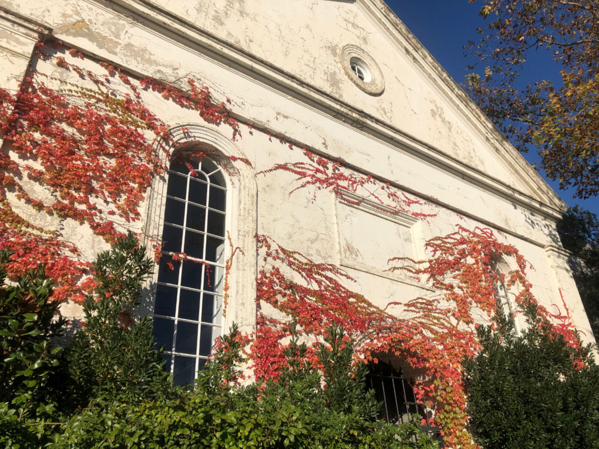

Since you closed the window
New post goes here &all that
Vortex at last mayhaps
Time to take up the wait for One Fine Morning.
- ??? ?? July, 2022
Contraryways

I went to the graveyard this evening for the space and quiet. No one was
around so I could talk aloud to myself without a mask on. It really didn't
seem to have anyone around in any plane of being, except one person close
to the gate who was tapping something onto a tombstone with a small hammer.
The cemetery sort of is the afterlife. All those obelisks and either dead
trees or cypress-looking trees, and it felt like the wind had been sucked away.
I would not like a portrait on my grave. Although I wouldn't like to be in
a graveyard really, maybe just deep in a patch of ground far away. Which is
possible if I am murdered in a countryside village.
- Monday 27 June, 2022
Blotter
Hello, this is the beginning of my blog, and website. Work will be done to
make both more pleasing to look at and all that, it's a bit old-fashioned
but that has some character. I'll furnish it with pictures too, when I find
adequate scanning facilities.
To look out for is a section of fictional correspondence, a gallery titled
The Starving Museum (because it isn't satisfied by what paltry things it is
given), The Greenhouse, which you might have noticed on the home-page, and
lots of minor amusing things. And blog updates. Come what may.
- Sunday 26 June, 2022